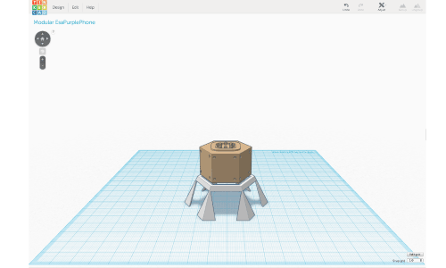
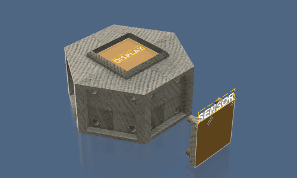
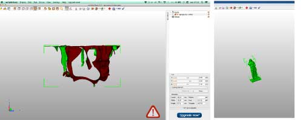
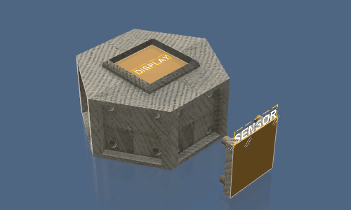
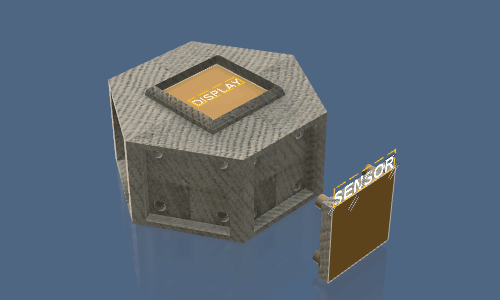

Leonardo ZacconePerformer - Sound Artist - UX Designer
Weekly Assignments
About Me
He was co-founder of our FabLab and now he's the event manager. He is a very close friend to me, while asleep!
He was born in Rome where he played Lego and Music. He used to live in Berlin, but finally he came back!
He was the main promoter of my company's success, I can't imagine it without his support, I really love him!
He's a great artist, an astonishing sound performer and instruments maker, his music of silence enchants me...
WEEK 1
In the Week#1 I realized this personal website using HTML5. I focused on the sections I really need, and then I decided to create not more than 4, WEEKLY PROJECTS, FINAL PROJECT, ABOUT ME and CONTACT ME.
The Weekly Project section is a list of icons I would replace with more meaningful images. I didn't create an html page for each project, but I'm using the Responsive Modal Window system, an architecture that includes in each icon of the WP list an internal #hyperlink. Clicking on the icon, it opens a window showing the assigned project. I decided to insert the FINAL PROJECT at the end of the WP list. Following my artistic and daily idea of playing the life, I wrote a very ironic About Me section. The Contact Me section is just a link that opens the email client inserting my email address on the to line. Then I learned how to use github and upload my weekly assignments.
Maker:
Leonardo Zaccone
Date:
02/03/2015
FabLab:
Frosinone, Italy
WEEK 2
In the Week#2 I designed the 3d model of my instrument. I started using the software I already knew, THINKERCAD, realizing the esagonal model with a command console on top and the speaker on bottom and the holes fort the sensors on each side, and the table in which the instrument could be inserted.

Then I started to use a more professional software, AUTODESK FUSION 360, and I copied the early model adding a best resolution of the holes and a version of a modular sensor plane. Instead I didn't designed the table, because I wasn't satisfied of it and for sure I want think it better. That's the first time in my life I rendered and it was a nice experience! I decided to export 3 render images, 2 top lateral views, showing better the sensor plane and the attach sistem, and a bottom view, showing better the cone for the speaker.

Maker:
Leonardo Zaccone
Date:
02/03/2015
FabLab:
Frosinone, Italy
WEEK 3
During this third week assignment, I started to learn a nice software I never used before as Rhinoceros. At the same time, I cut with a lasercutter for the first time in my life.
DESIGN with RHINOCEROS
I decided to draw a press fit model of my final project, as it means an hexagonal box with 6 hollowed side faces and a loudspeaker at bottom.
File Sources and some images on thingiverse
At first I designed the box without loudspeaker. To render the sticking out corners, I planned to fit every face up and down beneath two rectangle 2 cm far from the hexagons edge, and to connect each couple of sides using as joint 6 rectangular corner tile fixed at hexagons corner.
Then I decided to realize the loudspeaker model too, using 6 concentric circles, 7 counting the circle in the middle of the base, each of them 1 cm above and 2 cm of diameter bigger than the next one.
With the aim to fasten more as possible the box, I chose to insert the 6 friction point to fit the 6 circles at the 6 corner tile, adding to them a diagonal section.
That was a good solution to me, even if it creates some fitting problems, because each corner tile has to be joined to other 10 pieces (2 sides, top, bottom and 6 circles).
CUTTING with LASERCUTTER
As I told, I have never cut with laser before, so it was very exciting. The first step was exporting the .dxf file.
I had a cardboard sheet 1.2 x 0.7 m so I placed all the pieces of the design to save space, checking if I have enough, as it was.
In the model I planned to cut 3 of the 6 circles directly from the bottom hexagon.
I learned how to save a file to lasercut it, selecting “R12 Lines & Arcs” option.
Using the machine was relatively easy, I mean more than a 3d printer. I imported the .dxf on the proper software and then I assigned to each form the respective color. Actually all pieces to be cut but the letters on the top hexagon. I added those letters just to experience engrave and etching, so I assigned to E the etching color and to PP the engrave.
Me and my mates spend an afternoon optimizing the values of speed and power to the cardboard 2.5 mm and we found out:
cut 200 25 11
engrave 300 7.5
etching 250 5.8 5
Anyway, it didn’t work as well as expected. Engrave and etching was perfect but the cut of pieces was not deeper as needed, so I had to cut a second time turning off engrave and etching.
FITTING the PIECES
To find out if the joint beneath 2 bases, 2 sides and a corner fit works good, I rendered it in 3d in Rhinoceros.
It was a good suggest by my tutor, but the software join the surfaces just in virtual way, I had to join them physically and it was very hard! A good experience that thought to me a lot of things about press fit planning!
So I needed a second person helping me to press together all pieces and parts, and a lot of time thinking the best way to join everything.
At the end, I realized I did a mistake, because was impossible join the top to the corner sliding it laterally, as I planned, but I had to press it downward, fastening it by 18 friction points. So I modified the design of the corner tiles, as we can see in the next image, and I cut them again. Then everything worked.
To push together all pieces, follow this order:
On the hexagon base (hole in the center) join 4 corner pieces and the 3 sides between.
Then join all circles. Now join out of base the 2 corner and 3 sides left.
Then press this group of pieces all together on the base, joining the outer sides of each group too.
At last press the top hexagon to the body fastening it with 18 friction points.
Click on this
link
to the source files and more images on thingiverse.
Maker:
Leonardo Zaccone
Date:
02/03/2015
FabLab:
Frosinone, Italy
WEEK 3
3D SCANNING
During this week I explored a series of 3d-scan methods to define the difference and to improve myself.
I used in order
3dSense and his software at FabLab Giardino with my FabAcademy mates and tutor,
Kinect and skanect at my FabLab (Roma Makers)
iPhone 5 and 123D Catch at Museum Centrale MonteMartini in Rome
At Frosinone was just a first attempt to scan an object. I try to scan a fire estinguisher, putting it on a table in a corner of the room and moving myself around the object. I was not satisfied by the results. The main problem I found was the difficulty to walk around an object keeping always the same distance from it.
The day after I scanned the Robot EMILIO at FabLab Roma Makers using our Kinect. It works better, probably just because I started from my early experience. The problem here was the capture of 2 triangles in the bottom part. The angle of capture, slightly over the middle of the body, generate a blind point under those two surfaces protruding the upside down cone. So the triangles were kept as holes. I used MeshMixer to flatten the cone but the result is not so good.
The day after again I went to Centrale MonteMartini and there I used 123D Catch with my iPhone to scan some ancient roman statue here exposed between old electric machines. I chose to capture a bronze statue of Agrippina. The reason I chose to scan this statue was that it stays in a good enlightened empty wide space. So I could walk around it without obstacle, moving my body slower and firmer as possible, receiving a good light even at the back of the statue.
Indeed during the earlier scanning experience I got 3 important rules about a good 3d scanning:
keep the same distance from the center of the object
keep the same height of the camera view
have a good light all around the object
clearly, when we scan moving around the object is very hard to respect all those points.
The capture of Agrippina Statue really satisfied me. 123D Catch works very well. I needed to kept 33 pictures around it following the slices crown and then the cloud software gives back to me the entire room with the statue in the middle.
I clean it around using Netfabb Basic which cuts X, Y, Z very simply and quickly, without needing to repair the model. 
Another nice feature of 123D Catch is that you can publish your scanning projects, with .stl and all photos you kept. Download Agrippina files here.
3D PRINTING
I decided to model a sandal using Rhino. I found a tutorial
realized by an architect, and I inspired my modeling to it. Respect his model, I decided to raise the heel height and I added two holes for the cloth laces I planned to insert.
As I tried many times before, with a bow of 60 degrees or less, my PowerWasp can print this holes without problem.
The tutorial wasn’t thought for 3d printing, so I could not print the first .stl I exported. I found out how save files in Rhino to print them, closing every form in a only one polysurface. So I did and it works.
I realized the model of a right foot, and to print the left one I directly used the “mirror y” feature on Cura. The length of the model was based on the feet italian scale, number 37, it means 23.8 cm, so every sandal was printed singularly. I printed them using a PowerWasp Evo with a 0.5 nozzle. I set the layer height at 0.35 because I didn’t need a perfect resolution. I set a speed of 80 mm/s, slightly raising it manually during the bridge level of the holes. Each of two takes 2 hours and 20 minutes.
After I printed both of them I added the laces and a friend of me wore them walking for some meters. The resistance was good even if I set a normal 20% fill.
The source file are downloadable on thingiverse.
Maker:
Leonardo Zaccone
Date:
02/03/2015
FabLab:
Frosinone, Italy
WEEK 3
MY WORK
I completed two different casting process:
CHOCO CASTING: the first one realized following the assignment, using Roland SRM-20 mill machine to carve the positive pattern from a wax box and then using food silicon for the mold and chocolate to cast in it
TV CASTING: the second one setting in a box a small tv I had to create the mold with the same silicon but casting in it a resin to create a plastic reproduction.
PHASE A
To create the positive model I used TINKERCAD. The image shows 4 different modeling phases:
At beginning I modeled the box I had using the proper sizes I measured, 167x80x37mm.
Then I emptied it creating a frame of 5x5mm and a 15 degree inclinated wall on both sides to make silicon extraction easier.
After I modeled the positive pattern, in this case two circles with my makers community logo in high and low relief, I measured the max height, 6.33mm, I added 5mm to it for the min height of the mold and I filled up the empty box until 11.33mm from the top of the box.
Finally I put the circles inside and I fused all together, saving it as .stl
Maker:
Leonardo Zaccone
Date:
02/03/2015
FabLab:
Frosinone, Italy
Coming Week
COMING WEEK PROJECT
Maker:
Leonardo Zaccone
Date:
02/03/2015
FabLab:
Frosinone, Italy
Final Project
FINAL PROJECT DESCRIPTION I would realize an interactive music instrument. I called it MODULAR ESAPURPLEPHONE because the project has been started modifying the PurplePhone, an earlier synth I realized using Arduino and a light sensor.
This project is modular because I would realize 6 input box in which you can insert an input face following an open standard I give, and every input face could be realized using a different sensor.
For my work, I mind to realize 2 light sensor faces, 2 interactive textile faces and 2 distance sensor faces.
I would use a Raspberry PI to handle the interaction and generate sounds using the software pure data, so the instrument could work without a laptop. Anyway I need to realize the DAC and the ADC and a system which transform every input in a MIDI output, so you can use this instrument as a MIDI control.
I designed the body of the instrument as shown in the second assignment. I mind to build it using wood and lasercutter. At the bottom I would insert a loudspeaker, so that you can use it without an external sound system.


 
 
 Using the machine was relatively easy, I mean more than a 3d printer. I imported the .dxf on the proper software and then I assigned to each form the respective color. Actually all pieces to be cut but the letters on the top hexagon. I added those letters just to experience engrave and etching, so I assigned to E the etching color and to PP the engrave.
Me and my mates spend an afternoon optimizing the values of speed and power to the cardboard 2.5 mm and we found out:
Using the machine was relatively easy, I mean more than a 3d printer. I imported the .dxf on the proper software and then I assigned to each form the respective color. Actually all pieces to be cut but the letters on the top hexagon. I added those letters just to experience engrave and etching, so I assigned to E the etching color and to PP the engrave.
Me and my mates spend an afternoon optimizing the values of speed and power to the cardboard 2.5 mm and we found out: